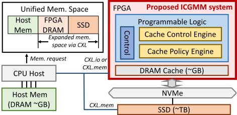
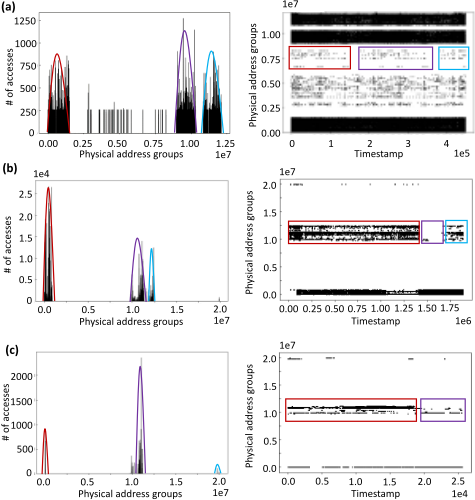
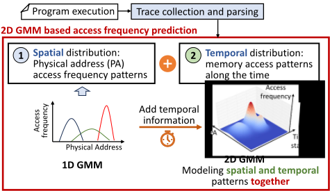
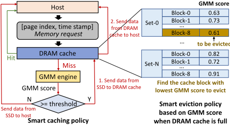
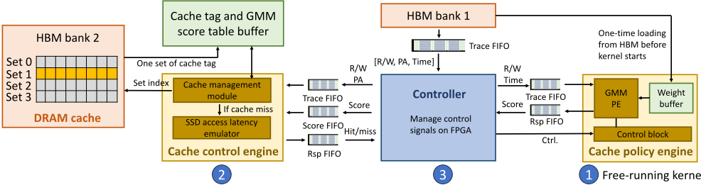
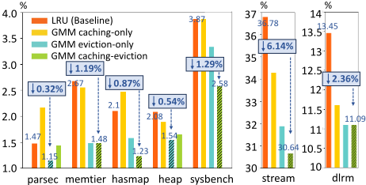

ICGMM：基于高斯混合模型（GMM）智能缓存的 CXL 内存扩展
CXL 内存扩展将 SSD 作为主机内存的延伸、用 DRAM 作设备缓存，但面临三大问题：SSD 微秒级访问导致 cache miss 代价高、DRAM 64B 与 SSD 4KB 访问粒度不匹配造成次优缓存、已有学习型缓存策略偏软件实现且硬件开销大。论文提出 ICGMM，以二维 GMM（输入为物理地址变换的页索引与时间戳）预测页未来访问频率，在硬件中直接完成缓存与逐出决策，GMM 经 EM 算法无监督训练。系统在 Xilinx Alveo U50 FPGA 上用 Vitis HLS 以 dataflow 架构实现（free-running kernel、FIFO 接口、II=1 流水线、并行 tag 比较），233 MHz 下仅占 14% BRAM 与 2% DSP。在 dlrm、parsec、sysbench 等七个 trace 上，相比 LRU，cache miss rate 降低 0.32%–6.14%，平均 SSD 访问延迟降低 16.23%–39.14%；相比 LSTM 策略引擎，推理快逾 10,000 倍、BRAM 少用逾 40 倍。该工作是 CXL 内存扩展架构与硬件 ML 缓存策略设计的直接参考。
CXL 使能的内存扩展中，SSD 作为扩展内存、DRAM 作为设备缓存，存在三大挑战：1) SSD 访问延迟为微秒级，cache miss 代价远高于 DRAM 纳秒级访问；2) DRAM（64B）与 SSD（4KB）数据访问粒度不匹配导致缓存次优、缓存大量无关数据；3) 已有学习型缓存策略（LSTM、模仿学习、强化学习等）以软件为中心，算法执行开销高，且未考虑 CXL 设备缓存（DRAM）的硬件性能。
提出 ICGMM：基于二维 GMM 的硬件缓存策略引擎。以物理地址变换得到的页索引 PI（PI = PA << 12）与变换时间戳 T 为输入，用 256 个二维高斯函数加权混合输出预测页未来访问频率的分数 G：分数超阈值则将该 4KB 页缓存入 DRAM，逐出时用 GMM 分数替代 LRU 计数器、逐出集合内分数最低的块。GMM 用 EM 算法无监督训练；trace 预处理包括丢弃前 20%/后 10% 以消除 warm-up 偏差，并划分 access shot 与 time window（len_window=32、len_access_shot=10000，经验选择）。硬件在 Xilinx Alveo U50 FPGA（HBM 作 DRAM cache）上用 Vitis HLS/Vivado 2023.1 实现，采用 dataflow 架构与 free-running kernel、FIFO 接口、II=1 深流水线、并行 tag 比较、片上 weight buffer，并内置 SSD 访问延迟模拟器；cache 配置为 64MB、4KB block、8 路关联，运行频率 233 MHz。论文还指出该方案可延伸到 SmartSSD 作为 CXL 内存扩展设备的场景。
相比 LRU，在七个 benchmark（hashmap、heap、dlrm、parsec、stream、memtier、sysbench）上 cache miss rate 降低 0.32%–6.14%
平均 SSD 访问延迟（平均内存访问时间）降低 16.23%–39.14%
DRAM cache hit 时间为 1 μs；cache miss 时 GMM 推理延迟为 3 μs，可与 SSD 读（75 μs）/写（900 μs）请求延迟重叠
相比三层 LSTM（hidden dimension=128、输入序列长 32）策略引擎基线：GMM 推理快超过 10,000 倍，BRAM 少用超过 40 倍（GMM 仅占 2% 片上存储）
FPGA 资源占用：190（14%）BRAM、117（2%）DSP，运行频率 233 MHz
与 DeepCache/Glider 等 LSTM cache line 预测器、LeCaR/PARROT 的模仿/强化学习、GL-Cache 的分组学习等以软件为中心的学习型缓存策略不同，ICGMM 利用内存访问空间/时间分布天然符合高斯混合的观察，将轻量 GMM 作为硬件实现的缓存策略引擎直接部署在 FPGA 可编程逻辑中，通过 dataflow/free-running kernel 架构把 3 μs 推理延迟隐藏在 SSD 访问延迟之内，并以远小于 LSTM 的硬件资源取得更高的缓存命中收益；同时面向 CXL 内存扩展与 SmartSSD 场景提出硬件管理缓存的完整系统方案（缓存策略引擎 + 缓存控制引擎 + 信号控制器）。
相关度级别：high
命中能力域：2.1 IP 架构与微架构
理由：直接命中 2.1：论文完成了 CXL 内存扩展系统的顶层与模块级架构设计（缓存策略引擎、缓存控制引擎、信号控制器），以 dlrm/parsec/sysbench 等真实 workload trace 驱动评估，并在缓存命中率、访问延迟与 BRAM/DSP 资源之间做 PPA 权衡，属于典型的内存子系统架构与 workload-driven 性能建模工作。CXL 内存扩展与团队内存（LPDDR/DDR5/HBM）和互连（UCIe）IP 产品线方向高度相邻，且作者来自 Samsung Semiconductor Memory Solution Lab，代表存储厂商关注的架构演进方向。需要说明：论文硬件实现采用 HLS/FPGA 原型而非可综合 ASIC RTL，未涉及逻辑综合、时序收敛、lint/CDC 等 2.2 内容，故不计入 2.2；其 FPGA 原型方法学与 2.6 的原型能力存在技能重叠，但论文目的并非仿真加速或验证基础设施，故亦不计入。
建议动作：深入精读并做内部分享
Hanqiu Chen 1 § , Yitu Wang 2 § , Luis Vitorio Cargnini 3 , Mohammadreza Soltaniyeh 3 , Dongyang Li 3 , Gongjin Sun 3 , Pradeep Subedi 3 , Andrew Chang 3 , Yiran Chen 2 和 Cong Hao 1
1 佐治亚理工学院，2 杜克大学，3 三星半导体公司
{hanqiu.chen, callie.hao}@gatech.edu, {yitu.wang, yiran.chen}@duke.edu
{v.cargnini, m.soltaniyeh, dongyang.li, gongjin.s, prad.subedi, andrew.c1}@samsung.com ∗
计算快速链路（Compute Express Link，CXL）应运而生，为解决主机与多个设备之间计算速度与数据通信速率之间的巨大差距提供了一种方案。它在主机与诸如固态硬盘（Solid-state drive，SSD）等用于内存扩展的 CXL 存储设备之间构建统一且一致的内存空间，并由相应的 DRAM 实现为设备缓存。然而，这也带来了诸多挑战，例如高昂的缓存未命中代价、因 DRAM“缓存”与 SSD“内存”之间数据访问粒度不匹配而导致的次优缓存，以及低效的硬件缓存管理。为解决这些问题，我们提出了一种名为 ICGMM 的新型解决方案，该方案采用基于高斯混合模型（Gaussian Mixture Model，GMM）的方法，直接在硬件上优化缓存与逐出。我们在 FPGA 开发板上对该解决方案进行了原型实现，与经典的最近最少使用（Least Recently Used，LRU）缓存策略相比，其展现出显著的改进。我们观察到缓存未命中率降低了 0.32% 至 6.14%，从而使平均 SSD 访问延迟大幅降低 16.23% 至 39.14%。此外，与最先进的基于长短期记忆网络（Long Short-Term Memory，LSTM）的缓存策略相比，我们在 FPGA 上的 GMM 算法实现了超过 10,000 倍的惊人延迟降低。值得注意的是，这一切是在所需硬件资源少得多的情况下实现的。
关键词：高斯混合模型（GMM）、计算快速链路（CXL）、DRAM 缓存、内存扩展
Memory wall [1] is a critical performance bottleneck significantly impacts the hardware efficiency in memory-intensive tasks [2-4]. Compute Express Link (CXL) [5] has emerged as a viable solution to this challenge. Built upon the serial
∗ § Equal contribution. Hanqiu Chen is responsible for prototype design on FPGA and paper writing, and Yitu Wang is responsible for GMM-based cache policy design. This work has been done as part of Hanqiu's and Yitu's internships in the Memory Solution Lab at Samsung Semiconductor, Inc.
Permission to make digital or hard copies of part or all of this work for personal or classroom use is granted without fee provided that copies are not made or distributed for profit or commercial advantage and that copies bear this notice and the full citation on the first page. Copyrights for thirdparty components of this work must be honored. For all other uses, contact the owner/author(s).
ACM ISBN 979-8-4007-0601-1/24/06.
© 2024 Copyright held by the owner/author(s).

PCI Express (PCIe) infrastructure, CXL offers a low-latency, high-bandwidth interconnect technology. It facilitates the direct sharing of memory and cache resources among devices, thus greatly enhancing the performance of data-intensive applications [6-9].
Motivated by these challenges, in this paper, we propose ICGMM, a hardware-managed DRAM caching system for CXL-enabled memoryexpansion prototyped on FPGA. ICGMM incorporates a hardware-efficient cache policy engine based on the Gaussian Mixture Model (GMM) for improved cache hit rate and reduced average memory access
Memory coherence provided by CXL facilitates memory expansion to the storage of space of CXL devices, such as SSD. Yang et al. [10] proposed using DRAM as a 'cache' for storage in CXL-enabled memory expansion systems, demonstrating improved SSD access efficiency, however, DRAM 'cache' still faces several challenges. 1 Large cache miss penalties. Compared with using DRAM as main memory and SRAM as cache, SSD data access latency is in microseconds [11], significantly higher than DRAM access in nanoseconds. This leads to substantial cache miss penalties. 2 Suboptimal caching. Suboptimal caching arises due to a mismatch in data access granularity between DRAM (64B) and SSD (4KB) [12]. This necessitates a minimum cache block of one page size (4KB), often resulting in the caching of extraneous data. 3 Hardware-inefficient cache policy designs . Prior learning-based cache policies [13-16] are managed by the software, inducing high overhead of executing the corresponding algorithm and overlooking the hardware performance considerations for CXL-device cache, i.e., the DRAM.
latency . Our contributions can be summarized as follows in four aspects: system, algorithm, hardware, and evaluation.
Compute Express Link（CXL）[5] 是一种构建于 PCIe 之上的新型互连协议，能够在统一的内存空间内连接异构设备。它支持通过 CXL.io 和 CXL.mem 协议直接使用主机的加载/存储（load/store）指令，从而加速主机对设备内存的访问。在支持 CXL 的系统中，将 DRAM 用作 SSD 等存储设备的缓存，是实现高效 SSD 访问的一种可行内存扩展方案 [10]。然而，正如第 1 节所述，DRAM 缓存在辅助数据传输方面效率低下。必须将 DRAM 缓存块大小对齐为 4KB，以与 SSD 的最小访问粒度保持一致。由于包含了不常被访问的数据，这种粒度不匹配会降低缓存命中率。
针对次优的粗粒度缓存以及较大的缓存缺失代价，我们提出设计一个更强大的缓存策略引擎，通过在页级别（4KB）上预测频繁访问的数据来提高缓存命中率，从而大幅降低主机经由 CXL 访问 SSD 的平均延迟。图 1 展示了支持 CXL 的内存扩展的总体概览，其中突出显示了我们所提出的、已在 FPGA 上实现原型的 ICGMM。

基于学习的缓存策略利用历史缓存数据来预测未来的缓存优先级，从而提升缓存命中率。将机器学习融入缓存策略设计是当前一个重要的研究领域。例如，DeepCache [13] 和 Glider [14] 利用基于长短期记忆网络（LSTM）的缓存行预测器在智能缓存方面实现了创新。LeCaR [20] 和 PARROT [15] 采用模仿学习（IL）和强化学习（RL）来实现更复杂的策略。GL-Cache [16] 将相似的缓存对象分组，以进行集体学习和淘汰决策。
尽管现有的基于学习的缓存策略能够提升缓存命中率，但它们主要以软件为中心，忽略了实际执行时的硬件代价。相比之下，我们提出了一种硬件友好且轻量级的缓存策略引擎，旨在相比现有缓存策略降低硬件开销和资源利用率。
The GMM [21] is a flexible clustering model for capturing the underlying structure of data through a combination of Gaussian distributions. We conduct a preliminary
x

study on three trace benchmarks: dlrm [17], parsec [18] and sysbench [19] with memory access spatial and temporal distribution patterns shown in Fig. 2: the spatial distribution describes the memory access frequency associated with data location, while the temporal distribution describes memory access location associated with time. We find that spatial distribution aligns with a mixture of Gaussian distributions, each having distinct means and co-variances. Temporal distribution is non-random and can be clustered into multiple groups, which is suitable to use GMM for clustering. We also observe similar spatial and temporal patterns on other trace benchmarks. To obtain the optimal accuracy, GMM needs to combine these two distributions for prediction because although some specific address ranges have higher access frequency than others, however, the access frequency distribution is uneven in temporal. Only considering spatial distribution will degrade GMM prediction performance.
Motivated by the natural fit for employing GMM in modeling both spatial and temporal memory access patterns together , we propose to use a two-dimensional GMM for memory access modeling, using transformed physical address ( 𝑃 ) and timestamp ( 𝑇 ) as inputs, as shown in Fig. 3. When extending to 2D, the Gaussian distribution can be expressed using the following equations:
where 𝝁 𝑘 is a 2D mean vector and 𝚺 𝑘 is a 2 × 2 co-variance matrix of each 2D Gaussian function. By mixing 𝐾 Gaussian functions together using different normalized weights 𝜋 𝑘 (0 ≤ 𝜋 𝑘 ≤ 1 , 𝐾 𝑘 = 1 𝜋 𝑘 = 1), our 2D GMM outputs a score G that predicts the future access frequency of each physical address, as shown in the following equation:
where 𝝅 , 𝝁 , and 𝚺 are trainable parameters for encoding different types of memory access traces.
Algorithm 1 Trace timestamp transformation for GMM 1: 𝑡𝑖𝑚𝑒𝑠𝑡𝑎𝑚𝑝 ← 0 2: 𝑖𝑛𝑑𝑒𝑥 ← 0 3: while a memory request comes do 4: if 𝑖𝑛𝑑𝑒𝑥 ≥ len_window then 5: 𝑡𝑖𝑚𝑒𝑠𝑡𝑎𝑚𝑝 ← 𝑡𝑖𝑚𝑒𝑠𝑡𝑎𝑚𝑝 + 1 6: 𝑖𝑛𝑑𝑒𝑥 ← 0 7: end if 8: if 𝑡𝑖𝑚𝑒𝑠𝑡𝑎𝑚𝑝 ≥ len_access_shot then 9: 𝑡𝑖𝑚𝑒𝑠𝑡𝑎𝑚𝑝 ← 0 10: end if 11: 𝑖𝑛𝑑𝑒𝑥 ← 𝑖𝑛𝑑𝑒𝑥 + 1 12: end while
与高斯混合模型（GMM）集成的缓存策略引擎，基于 GMM 对访问频率的预测分数，决定当前所请求的固态硬盘（SSD）页是否会被缓存，以及哪个页将被淘汰。分数越高，表明该页未来被访问的可能性越大。如图 4 所示，当分数高于阈值时，该页将被缓存到动态随机存取存储器（DRAM）中。为了收集足够的数据用于 GMM 训练，每个程序都会运行很长时间，足以度过预热阶段并使内存访问模式趋于稳定。我们使用一个开源工具 [10] 进行踪迹（trace）收集，内容包括读/写信息、物理地址和访问时间。随后，踪迹将被解析和处理（见 3.1 节），从而被分解为有意义的时间窗口以及供 GMM 使用的精确输入。GMM 的输入包括由物理地址计算得到的页索引以及经过变换的访问时间戳。接下来，GMM 将根据 GMM 分数做出缓存与淘汰决策（见 3.2 节）。GMM 采用期望最大化（EM）算法进行训练（见 3.3 节）。
我们对踪迹进行预处理，以便于 GMM 训练。为了缓解程序预热的偏差，我们丢弃踪迹的最初 20% 和最后 10%。由于 SSD 的访问粒度为 4KB 页，与主机的访问粒度不同，我们通过分配页索引（PI）将地址归并到页中，该页索引由物理地址（PA）计算得到，即 𝑃𝐼 = 𝑃𝐴 << 12。
为了帮助 GMM 更好地捕捉内存访问局部性，我们首先将整个踪迹划分为若干称为访问片段（access shot）的小段。一个访问片段内的踪迹数量用 𝑙𝑒𝑛 _ 𝑎𝑐𝑐𝑒𝑠𝑠 _ 𝑠ℎ𝑜𝑡 表示。随后，我们继续将一个访问片段内的踪迹划分为更小的段，称为时间窗口（time window）。一个时间窗口内的踪迹数量用 𝑙𝑒𝑛 _ 𝑤𝑖𝑛𝑑𝑜𝑤 表示。如算法 1 所述，我们为同一时间窗口内的踪迹分配相同的时间戳，该时间窗口便可由此时间戳进行索引。不同的时间窗口以递增的时间戳进行索引，当踪迹到达访问片段的末尾时，时间戳将被重置为零。在我们的实验中，我们根据经验选择 𝑙𝑒𝑛 _ 𝑤𝑖𝑛𝑑𝑜𝑤 = 32 以及

𝑙𝑒𝑛 _ 𝑎𝑐𝑐𝑒𝑠𝑠 _ 𝑠ℎ𝑜𝑡 = 10,000，以获得最佳的 GNN 训练性能。
如图 4 所示，为了利用高斯混合模型（GMM）实现智能缓存，当应用程序在我们的系统上运行时，如果某个内存请求的页索引命中 DRAM 缓存，数据将绕过 GMM 直接发送给主机。在缓存未命中时，GMM 会为该页计算分数；如果该分数低于某一阈值——这表明该页未来不会被频繁访问——则该页不会被缓存，而是直接从 SSD 发送给主机。相反，若分数高于阈值，则会触发将这些页缓存到 DRAM 中，以预期其在未来被频繁访问。
我们还利用 GMM 实现智能逐出，具体做法是在缓存块内用 GMM 分数取代 LRU 计数器。当 DRAM 缓存已满而需要执行逐出时，我们在相应的组内按 GMM 分数对各缓存块进行排序，并逐出分数最低的块，这表明该块未来访问不频繁。逐出完成后，我们用来自 SSD 的新页及其对应的 GMM 分数来更新缓存。
GMM 训练通过无监督学习进行，采用期望最大化（EM）算法。该过程包含两个主要步骤。在第一个期望步骤中，基于贝叶斯定理计算每条访问轨迹（trace）属于每个高斯函数的概率。在第二个最大化步骤中，更新 GMM 参数（𝝅、𝝁 和 𝚺），以确保 GMM 参数能够更好地表示输入访问轨迹的内存访问模式。每次迭代之后，通过计算 𝝅、𝝁 和 𝚺 的最大似然估计（MLE）的变化量来检查收敛情况。如果该变化量低于预定义的阈值，则 GMM 已收敛，参数将被保存用于推理。
我们在 FPGA 上对 ICGMM 进行了原型实现，不仅是为了证明其对硬件的友好性，更重要的是，ICGMM 开启了将 SmartSSD [22] 用作支持 CXL 的内存扩展设备的新机遇：SmartSSD 在其存储设备上附带了一个小型 FPGA，该 FPGA 可以充当 SSD 的缓存和控制器。由于主机与 SmartSSD 之间频繁的数据交换会带来高延迟，基于主机的 DRAM 缓存管理效率低下，因此通过 SmartSSD 中的可编程逻辑实现硬件管理的缓存控制，可以显著提高将 DRAM 用作 SSD 缓存的效率。
ICGMM 在 Xilinx Alveo U50 FPGA 上进行原型实现，利用其高带宽存储器（HBM）作为 DRAM 缓存。如图 5 所示，该系统包含三个主要模块：1 缓存策略引擎，带有经过优化的 GMM 内核，用于预测未来页面访问频率的可能性；2 缓存控制引擎，负责缓存管理、命中/未命中判定以及缓存替换，其中还包括一个 SSD 访问延迟模拟器；3 信号控制器，用于与缓存控制引擎和策略引擎进行接口，并管理 HBM、板载缓冲区以及不同模块和块之间的数据流。
然而，由于需要对各种模块和块进行复杂的控制，ICGMM 的硬件实现并非易事。例如，缓存策略引擎必须持续处于活动状态以等待信号，仅在缓存未命中时才触发计算。这种运行时动态控制无法在硬件设计阶段确定。因此，我们提出了一种采用“自由运行内核”（free running kernels）的数据流架构，以实现数据驱动的控制以及不同模块和块之间的高并行性。
我们基于高斯混合模型（GMM）的缓存策略引擎是一个独立的、数据驱动的模块，能够在无需外部干预的情况下持续处理数据，这也被称为“自由运行内核”（free-running kernel）。当从 trace FIFO 中检测到新的 trace 时，该引擎会取出该 trace 并将其解码为 GMM 输入格式，然后执行 GMM 推理。一个专用的控制块负责监管该策略引擎，等待来自中央信号控制器的指令。如果信号控制器激活了缓存策略引擎，trace FIFO 和响应（rsp）FIFO 将被激活，GMM 分数将从 rsp FIFO 中返回，用于智能地管理缓存。否则，这两个 FIFO 将被关闭，系统将运行默认的传统最近最少使用（LRU）策略来进行缓存替换。
为了优化硬件性能，我们利用 GMM 中各高斯函数相互独立的特性，构建了一个深度计算流水线，以启动间隔（II）= 1 的方式同时处理计算的各个阶段。对于需要顺序处理的、来自不同高斯函数的分数累加任务，我们实现了一个移位寄存器，在累加过程中保存临时值，以解决数据依赖问题。此外，GMM 的规模足够小，可以存储在板载权重缓冲区中，从而避免了 HBM 与权重缓冲区之间持续的数据交换。
缓存控制引擎由两个模块组成：一个用于缓存管理，另一个用于模拟固态硬盘（SSD）访问延迟。在缓存管理模块中，来自 trace FIFO 队列的输入访问轨迹会被解码以提取组索引，该索引用于识别 HBM 中相应的缓存组。这里并不传输缓存中的实际数据，而是仅将缓存标签和 GMM 分数传输到板载缓冲区。通过对缓存标签和 GMM 分数表缓冲区进行分区，来自各个块的所有标签可以与传入内存请求的目标标签同时进行比较，而不同于传统的顺序比较方式。这种并行处理显著加快了缓存命中/缺失的判定。

为了在 FPGA 上对 ICGMM 进行更精确的端到端性能评估，我们还在缓存控制引擎中集成了一个 SSD 访问延迟模拟器。该模拟器在缓存缺失事件发生时工作，将缓存控制引擎中的数据流暂停一段设定的时长，以模拟 SSD 的响应时间。响应时间的参数会根据 SSD 或其他存储设备的类型而有所不同。
轨迹收集来源。为了对 ICGMM 进行全面评估，我们使用了多种基准测试（benchmark），既包括合成轨迹（trace），也包括来自真实应用的轨迹。我们选择的合成轨迹基准是 hashmap 和 heap [10]。真实世界轨迹基准来自不同领域，包括来自深度学习推荐系统的 dlrm [17]、来自高性能计算的 parsec [18] 和 stream [23]，以及来自数据库系统的 memtier [24] 和 sysbench [19]。
硬件部署。作为案例研究，我们选择的缓存配置如下所示：缓存大小 = 64

MB，块大小 = 4 KB，相联度 = 8。GMM 的高斯函数数量为 256。用于访问延迟仿真的目标 SSD 采用三层单元（TLC）技术制造，平均读延迟 = 75 𝜇𝑠，写延迟 = 900 𝜇𝑠 [11]。ICGMM 部署在运行频率为 233 𝑀𝐻𝑧 的 Xilinx Alevo U50 FPGA 上，使用 Vitis HLS 和 Vivado 2023.1 完成高层次综合（HLS），仅消耗 190（14%）的 BRAM 和 117（2%）的 DSP。
我们通过将高斯混合模型（GMM）的缓存缺失率与基线最近最少使用（LRU）策略进行对比，评估 GMM 作为缓存策略引擎的有效性，对比采用三种策略：GMM 智能缓存、GMM 智能逐出，以及两者的组合。我们选取缓存缺失率最低的策略，如图 6 所示。结果表明，GMM 在所有 trace 上均降低了缓存缺失。具体而言，对于 parsec 和 heap，单独使用 GMM 逐出效果最佳，而对于其他 trace，组合方法则达到最优性能。
平均内存访问延迟的降低。利用 GMM 作为缓存策略可显著降低平均内存访问时间，因为它缓解了缓存缺失发生时访问固态硬盘（SSD）所带来的巨大延迟代价。我们进行了端到端的板级实测，结果表明动态随机存取存储器（DRAM）缓存命中时间为 1 𝜇𝑠。发生缓存缺失时，GMM 推理延迟为 3 𝜇𝑠，其速度足够快，能够与 SSD 读（75 𝜇𝑠）或写（900 𝜇𝑠）请求延迟相重叠。在这种情况下，缓存缺失代价来自 SSD 访问延迟：若需要 SSD 读，总代价达 75 𝜇𝑠；若在逐出时需将脏缓存块写回 SSD，则总代价为 975 𝜇𝑠。如表 1 所示，与 LRU 相比，GMM 在七个基准测试上将平均内存访问时间降低了 16.23% 至 39.14%。
| Benchmark | LRU | GMM | Reduction (%) |
|---|---|---|---|
| parsec | 3.92 𝜇𝑠 | 3.29 𝝁𝒔 | 16.23 |
| memtier | 2.98 𝜇𝑠 | 2.09 𝝁𝒔 | 29.87 |
| hashmap | 18.10 𝜇𝑠 | 11.02 𝝁𝒔 | 39.14 |
| heap | 16.48 𝜇𝑠 | 12.46 𝝁𝒔 | 24.39 |
| sysbench | 3.87 𝜇𝑠 | 2.91 𝝁𝒔 | 24.79 |
| stream | 156.39 𝜇𝑠 | 125.71 𝝁𝒔 | 19.62 |
| dlrm | 70.65 𝜇𝑠 | 58.43 𝝁𝒔 | 17.3 |
| Benchmark | LRU | GMM | Reduction (%) |
| BRAM | DSP | LUT | FF | Latency | |
|---|---|---|---|---|---|
| LSTM | 339 | 145 | 85029 | 103561 | 46.3ms |
| GMM | 8 | 113 | 58353 | 152583 | 3 𝝁 s |
| GMMgain | 2% | 78% | 69% | 147% | 15433 × |
| | BRAM | DSP | LUT | FF | Latency |
GMM 的延迟与资源利用率优势。为了凸显 GMM 作为策略引擎的硬件效率，我们将其与基于长短期记忆网络（LSTM）的策略引擎进行对比，后者在以往研究中被广泛使用 [13, 14]。我们设计了一个三层 LSTM 模型作为基线，其隐藏维度 = 128、输入序列长度 = 32，并将该 LSTM 部署在同一现场可编程门阵列（FPGA）平台上，采用合理的优化和相近的 DSP 资源利用率，以确保对比的公平性。在训练过程中，使用与 GMM 相同的输入并在与 GMM 相同的 trace 上进行训练时，LSTM 难以收敛，这是因为轻量级设计无法对长 trace 中大量的时序信息进行编码。更庞大的 LSTM 模型能获得更好的编码质量，但以牺牲硬件效率为代价。相比之下，如表 2 所示，我们的 LSTM 基线设计比 GMM 慢 10,000 倍以上，且 BRAM 资源消耗是 GMM 的 40 倍以上，这凸显了 GMM 更为优越的硬件效率。
在本文中，我们提出了 ICGMM，一种智能硬件缓存解决方案，它采用高斯混合模型（GMM）作为策略引擎，面向支持 CXL 的内存扩展系统。经过优化的基于 GMM 的策略引擎通过数据流架构在最小化开销的同时，智能地管理缓存与逐出操作。在多种基准测试中，ICGMM 将缓存未命中率降低了 0.32% 至 6.14%，将平均 SSD 访问时间降低了 16.23% 至 39.14%。此外，与常用的基于 LSTM 的策略引擎相比，基于 GMM 的策略引擎的片上存储器占用仅为 2%，且推理速度快 10,000 倍以上。
本工作部分受到三星存储解决方案实验室大学计划（Samsung Memory Solution Lab University Program）的支持。Andrew Chang 提供了指导。Luis Vitorio Cargnini 指导了基于 GMM 的缓存策略引擎的设计，Mohammadreza Soltaniyeh 指导了硬件原型的实现。Dongyang Li、Gongjin Sun、Pradeep Subedi、Yiran Chen 和 Cong Hao 参与了富有洞见的讨论并协助了论文撰写。
2 条证据未在原文中核对到